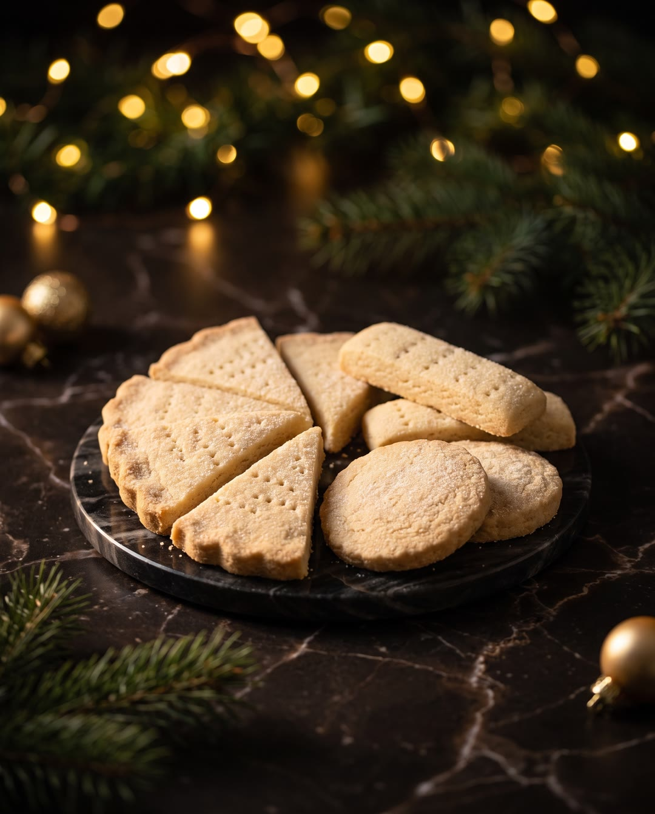

Шотландский шортбред
Шортбред — песочное печенье всего из трёх главных продуктов: масла, сахара и муки, без яиц и разрыхлителя. Родом оно из Шотландии, а в Британии коробка шортбреда — подарок номер один на Рождество. Хорошее печенье бледное, рассыпчатое и тает во рту.
Как готовить
Масло с пудрой
Размягчённое масло соединить с сахарной пудрой, ванильным сахаром и солью вилкой, венчиком или миксером на самых низких оборотах до кремовой консистенции. Воздух в тесто не вбивать.
Мука и крахмал
Всыпать муку или смесь муки с кукурузным крахмалом, соединить лопаткой и быстро собрать рукой в комок, долго не вымешивая.
Круг для «хвостов юбки»
Кусок теста раскатать между пергаментом и плёнкой в пласт толщиной 7–10 мм. Вырезать круг кольцом 14 см, лишнее убрать, бахрому по краю снять ножом.
Фалды по краю
Положить два пальца одной руки у кромки и указательным пальцем другой прожать выемку. Так пройти весь край, получится волнистая «юбка».
Разрезать на сектора
Протягивающим движением ножа разрезать круг на 8 секторов на всю толщину теста.
Узор вилкой
Наколоть поверхность вилкой, затем повернуть её и проколоть ещё раз под другим углом. Через проколы при выпечке выходит воздух, и поверхность остаётся ровной.
Круглые печенья
Раскатать второй кусок теста, разгладить и вырезать печенья вырубкой 6 см. Лишнее тесто аккуратно убрать, края подчистить, по желанию посыпать мелким сахаром.
Пальчики
Третий кусок раскатать и ножом подтянуть края к центру, формуя прямоугольник. Нарезать пальчики шириной около 2 см и длиной 7–8 см и наколоть вилкой.
Охладить и испечь
Убрать тесто в холодильник не меньше чем на 2 часа, не накрывая, пока оно не станет твёрдым. Выложить на пергамент и выпекать при 170 °C с обдувом 15–20 минут до кремового или светло-золотистого цвета, поглядывая с 10-й минуты.
Дорезать горячим
В первые 10 минут после духовки, пока печенье горячее и не хрупкое, тонким острым ножом прорезать его по намеченным линиям и подровнять края. Перекладывать только после полного остывания.
Секреты шефа
Вкус масла это вкус самого печенья, жирность это его текстура.
Это кукурузный крахмал, который и делает печенье настолько рассыпчатым, настолько нежным.
По классике печенье должно быть светленьким, бледненьким.
Имейте ввиду, что пока оно горячее, оно очень хрупкое.
Здесь кукурузный крахмал заменяется на молотый рис.